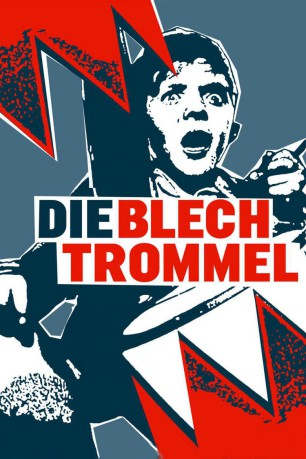
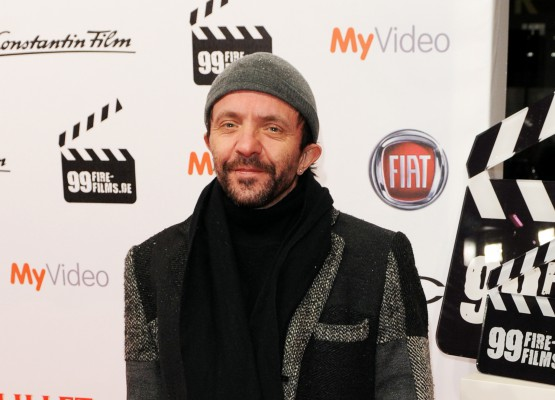

#6802 Die Blechtrommel
Alternativ: The Tin Drum (Englischer Titel)
Auszeichnungen: 5 Oscars gewonnen
 
 IMDB-Wertung: 7.6 / 10
IMDB-Wertung: 7.6 / 10  Metascore: 0
Metascore: 0 
Danzig 1927. Der frühreife Oskar Matzerath ist zwar erst drei Jahre alt, aber dennoch ist ihm folgendes klar Das kleinbürgerliche Leben, das die Erwachsenen führen, kann und will er nicht akzeptieren. Somit hört Oskar einfach auf zu wachsen. Leidenschaftlich protestiert der anarchische Zwerg auf seiner Blechtrommel gegen fanatische Nazis und deren feige Mitläufer. Immer wieder erhebt er seine Stimme gegen die muffigen Spießer der Weimarer Republik und deren derbe Erotik. Seine Stimme ist so laut und so schrill, dass alles Glas in seiner näheren Umgebung zerspringt. Erst als nach dem Krieg eine menschlichere Zeit beginnt, beschließt Oskar wieder am Leben teilzunehmen und und beginnt weiterzuwachsen.
Jahr: 1979
Dauer: 162 Minuten
FSK: 16
Land: West-Deutschland Studio: United ArtistsTonspuren:
Untertitel: Deutsch,
Auflösung: 720p (1280x720) Größe: 6717 MB
Genre: Drama, Krieg
Regisseur: Volker Schlöndorff
Drehbuch: Günter Grass
Soundtrack:
Darsteller:
 Mario Adorf als Alfred Matzerath
Mario Adorf als Alfred Matzerath Angela Winkler als Agnes Matzerath
Angela Winkler als Agnes Matzerath-  David Bennent als Oskar Matzerath
 Katharina Thalbach als Maria Matzerath
Katharina Thalbach als Maria Matzerath Daniel Olbrychski als Jan Bronski
Daniel Olbrychski als Jan Bronski Andréa Ferréol als Lina Greff
Andréa Ferréol als Lina Greff Heinz Bennent als Greff
Heinz Bennent als Greff Otto Sander als Musiker Meyn
Otto Sander als Musiker Meyn- Charles Aznavour als Sigismund Markus
- Marek Walczewski als Schugger-Leo
- Wojciech Pszoniak als Fajngold
- Zygmunt Hübner als Dr. Michon
- Mieczyslaw Czechowicz als Kobyella
- Beata Pozniak Daniels als Extra , uncredited
 Adolf Hitler als Himself , archive footage, uncredited
Adolf Hitler als Himself , archive footage, uncredited Reinhard Kolldehoff als Eel Catcher , uncredited
Reinhard Kolldehoff als Eel Catcher , uncredited Günter Meisner als Gesundheitspolizist , uncredited
Günter Meisner als Gesundheitspolizist , uncredited- Raphaël Vogt als Peter , uncredited
- Tina Engel als Anna Koljaiczek, jung
- Berta Drews als Anna Koljaiczek
- Roland Teubner als Joseph Koljaiczek
- Tadeusz Kunikowski als Onkel Vinzenz
- Ilse Pagé als Gretchen Scheffler
- Werner Rehm als Scheffler
- Käte Jaenicke als Mutter Truczinski
- Helmut Brasch als Der Alte Heilandt
- Wigand Witting als Herbert Truczinski
- Mariella Oliveri als Roswitha
- Fritz Hakl als Bebra
- Emil Feist als 1. Clown
- Herbert Behrendt als 2. Clown
- Karl Heinz Tittelbach als Felix
 Ernst Jacobi als Löbsack
Ernst Jacobi als Löbsack- Gerda Blisse als Frl. Spollenhauer
- Joachim Hackethal als Hochwürden Wiehnke
- Henning Schlüter als Dr. Hollatz
- Bruno Thost als Obergefreiter Lankes
- Alexander von Richthofen als Pvt. Herzog
- Lech Grzmocinski als Stauer
- Stanislaw Michalski als 1. Gendarme
- J. Kapinski als 2. Gendarme
- Dietrich Frauboes als Oberartz - Medical Chief
- Horst Gentzen als Felix , uncredited
- Lutz Riedel als Soldier , uncredited
Datei: X:\1979\Blechtrommel, Die (1979, FSK16, 1280x720).mkv seit 30.08.2017
Festplatte: HD 1971-1979
 Es gibt insgesamt 29 Filme in der Gruppe '1979'
Es gibt insgesamt 29 Filme in der Gruppe '1979'